Software Tutorials
|
|
KeePassX - create and store strong
passwords.
General Information
This page is a work in progress. Over time more tutorials will be added to it. Some of them may deal with software that is already included in the standard Linux Lite installation. Many will be for software that needs to be installed first because it is not part of the standard installation. Two choices listed under Menu -> System will be used frequently for installing software. Below are pictures of both for your reference in the tutorials. (If a tutorial requires something different from these, it will contain screenshots for that specific situation.)
What you will see when installing from Menu ->System -> Install Additional Software:
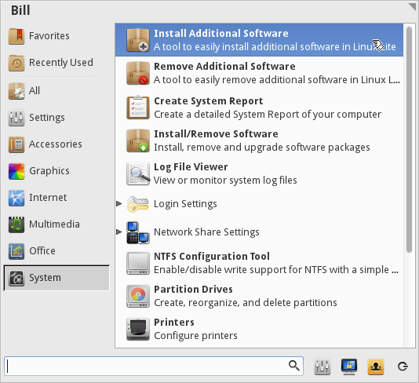
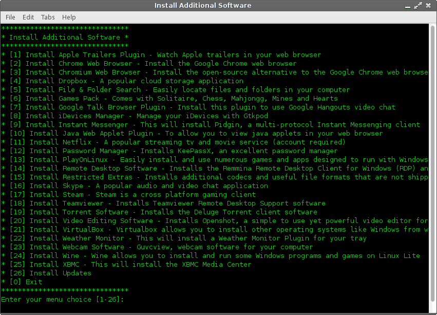
NOTE: The menu you see for 'Install Additional Software' may be different than shown here because of new software additions over time.
What you will see when installing from Menu -> System -> Install/Remove Software (Synaptic Package Manager).
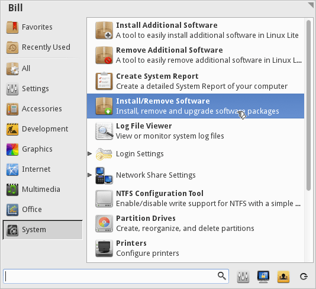
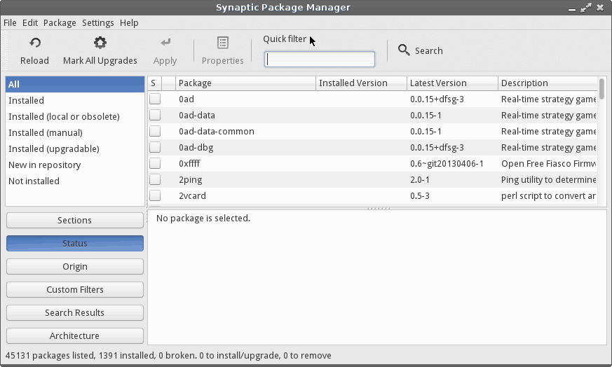
KeePassX is a password manager program used for securely creating and storing passwords. It includes a password generator that will create strong passwords for you. When using KeePassX, you only need to remember one password - the one you use for opening the program! Once your KeePassX data file is opened, transferring a password from the program to its entry form is done quickly and easily with a few mouse clicks.
To install, go to Menu -> System -> Install Additional Programs, type the number corresponding to KeePassX from the list shown in the pop-up window and enter your password when prompted for it.
After it's installed you can start it from Menu -> Accessories -> KeePassX. On your first startup you will need to create a new database for your passwords - click the interface button for that in the upper-left corner.
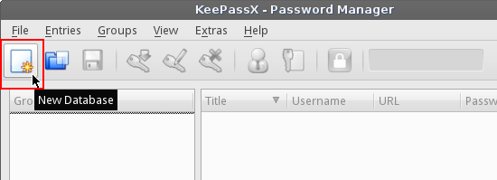
You will then be prompted to make a master password for the database that will contain your passwords. This is the only password you will need to remember. Do your best to make one that you not only can remember, but is strong also. Make it reasonably long with a combination of letters, numbers and other characters if possible.
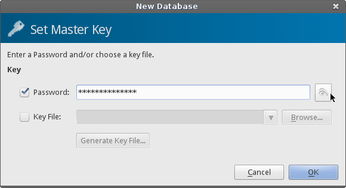
After entering your password you will see that the database is now populated with two groups shown on the left: Internet and eMail. Groups are just ways to organize your passwords according to their use. (You can edit, delete and create new groups by clicking 'Groups' along the top of the window.)
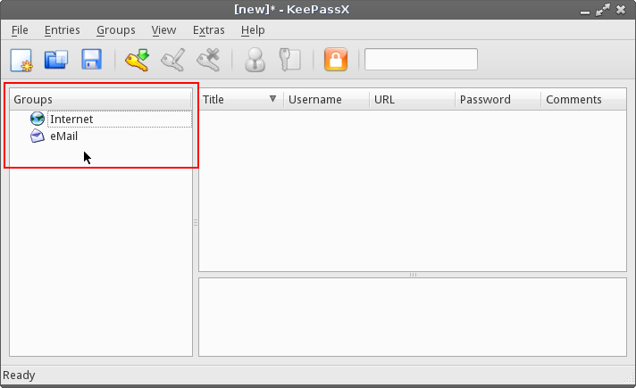
To create a password entry, click the 'Add New Entry' button along the top.
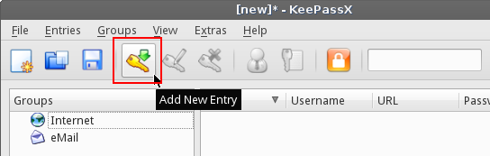
Select which group the password should fall under, fill-in your information, then enter your password (if you already have one) or click on the 'Gen' button to bring up the Password Generator to make one for you.
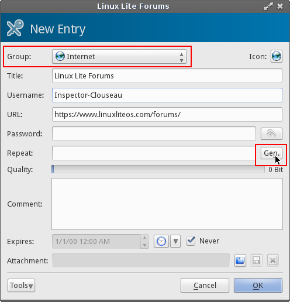
In the Password Generator you can specify the types of characters to include, the password length, etc. along with the option to enable entropy collection to further strengthen the password.
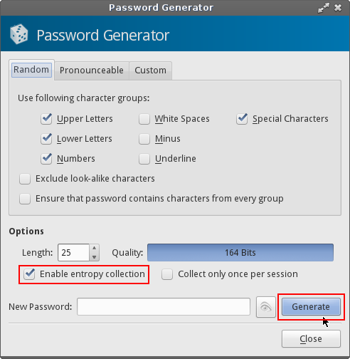
If you enable entropy collection move your mouse around randomly when the collection window pops up. The mouse data will be incorporated by the algorithm to produce the random password.
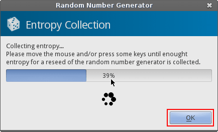
When it's done, hit 'OK' and it will fill-in the password it produced for you. If you would like to see it, click the eye symbol next to the password box.
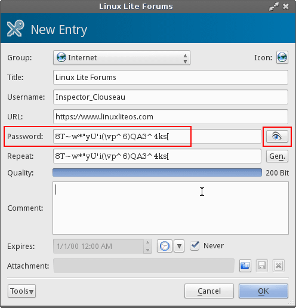
Click 'OK' when you are satisfied with everything and your new password entry will now appear in the list for the group you put it under. When you are done making your entries (or changes to existing ones), make sure save everything by clicking to click the Save Database button along the top of the window.
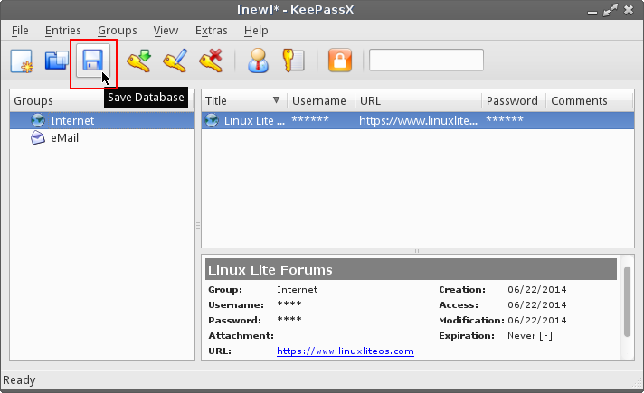
A dialog box will pop-up for you to specify a name for the file and where to save it. It will automatically put the '.kdb' (keepassx data base) extension on the file name and it will default to saving it in your home folder. (You can designate a different location to save to if you'd like.) So the example below will save a file called 'my-keepassx-data.kdb' under /home/bill.
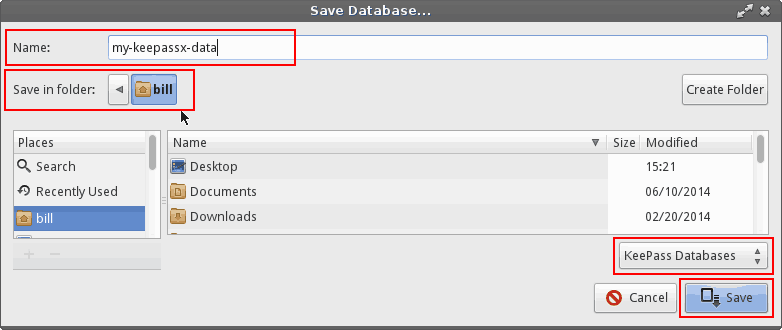
VERY IMPORTANT!
Be sure to make at least one extra copy
of your '.kdb' file to an external source, like a USB backup stick. If
your hard drive fails, or something else goes wrong that prevents you from
retrieving your files you will lose all of your passwords and access to the
accounts you set them for. That will not be a pleasant experience if you don't
have a backup copy made - so do that immediately and update it everytime you make
changes to the database.
Using KeePassX is simple!
Start KeePassX and highlight the site you want to log into. Navigate to the website, then click the person icon along the top of the KeePassX window to copy your username to the clipboard temporarily. Right-click in the website entry field for it and paste. Click the key icon (next to the person icon) to copy the password to the clipboard and paste it into the website password field. That's all there is to it! (Note: the information is automatically deleted from the clipboard after 20 seconds. You can change that and other settings by going to Extras -> Settings -> Security.)
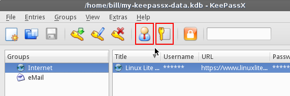
ADDITIONAL KEEPASSX INFORMATION